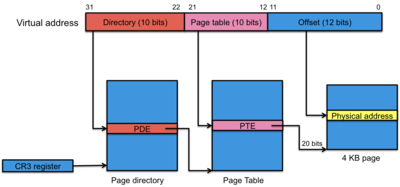
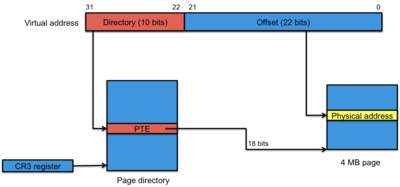
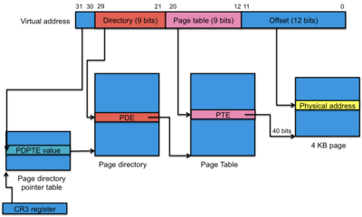
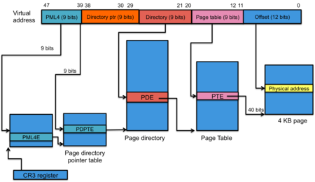
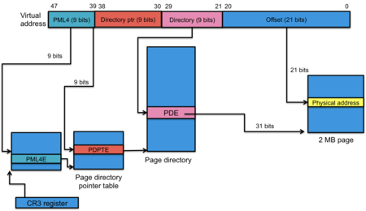
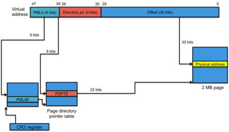

Memory Management: Paging
last update: March 21, 2012
The advantage of a bad memory is that one enjoys several times the same good things for the first time.
— Friedrich Nietzsche
This is a continuation of our discussion on memory management.
Case studies of paging architectures
We will examine the memory management units available on two of today's most popular processor architectures: the ARMv7-A and the Intel 32-bit and 64-bit architectures. Together, these represent the processors used on the vast bulk of devices in the world, ranging from cell phones to supercomputers. These studies will not go into the details of the architecture but rather focus on the basic approaches taken and on some of the unique characteristics.
ARMv7-A MMU Architecture
ARM is a 32-bit reduced instruction set computer (RISC) architecture developed and owned by ARM Holdings. The processors are licensed to manufacturers who may augment them with custom DSPs (digital signal processors), radios, or graphics processors. The processors are used in most cell phones and gaming consoles. The ARMv7-A architecture that we'll be examining is present in the Cortex-A8 and Cortex-A9 processors. The Cortex-A8 is used in Motorola Droid phones, the iPad, and the iPhone (3GS and 4), among numerous other devices. The Cortex-A9 is used in Apple's A5 processor that powers the iPad 2. Recent previous generations of ARM processors are not significantly different in terms of their MMU architecture so much of this discussion can apply to them as well. References to the ARM processor, MMU, or ARM architecture in the rest of this section will refer to the ARMv7-A architecture.
Figure 1. ARM sections and pages
Sections and pages
The ARM MMU supports four page sizes. The largest sizes are called sections and the smaller sizes are called pages:
- Supersections: 16 MB memory blocks (24-bit offsets)
- Sections: 1 MB memory blocks (20-bit offsets)
- Large pages: 64 KB pages (16-bit offsets)
- Small pages: 4 KB pages (12-bit offsets)
The MMU supports a two-level hierarchy for its page table structure. An entry in the first-level table contains either a pointer to a second-level tables (partial page tables) or a base address of a section or a supersection. Hence, if we use the really big pages — sections and supersections — then we don't have to go through two levels of hierarchy. The benefit of sections and supersections is that you can have a large region of memory, such as the operating system, mapped using just a single entry in the TLB. The MMU can be configured to use either small or large pages as well as sections or supersections. Sections (or supersections) can be mixed together with pages. Just because the architecture supports mapping blocks of several different sizes does not mean that the operating system will use the capability. Doing so introduces the problems associated with variable size partitions that we discussed earlier. However, even if this is not used for general-purpose memory management, it makes a lot of sense for mapping the operating system address space efficiently [1].
Translation Lookaside Buffers (TLB)
Figure 2. ARM memory translation
The ARM has two levels of TLBs. The smallest and fastest is the MicroTLB. There is a MicroTLB for the instruction and data sides of the CPU (instruction fetches uses one MicroTLB while data read/write operations use the other). The MicroTLB can store 32 entries [2]. The cache is fully associative and can perform a lookup in one clock cycle. Hence, there is no performance penalty for any memory references that are satisfied by the MicroTLB. The architecture supports the use of an address space identifier (ASID) to allow the operating system to identify one process' address space from another's without flushing the cache. Entries can also be tagged as global; so that they are shared among all address spaces. This is, of course, useful for mapping the memory regions used by the operating system. Each entry contains a number of protection bits and these are checked at each address lookup. If the protections disallow the requested memory operation (e.g., no-execute or read-only) then the MMU will signal a Data Abort, which will cause a trap. On a cache miss, the replacement algorithm may be selected to be either round-robin (the default) or a random replacement.
The second-level TLB is called the Main TLB. It catches any cache misses from the microTLBs. There is only one of these per processor, so it handles misses from both the data-side and instruction-side MicroTLBs. The cache comprises eight fully associative entries, which are fast and may also have their contents locked (i.e., they will not be replaced). It also contains 64 low associative entries. These are still much faster than a main memory access but may require a variable amount of clock cycles for lookup. The ability lock eight entries down is crucial for real-time systems. If you need to guarantee rapid real-time response to an event, you may not be able to afford to waste the time to access an in-memory page table to do an address translation. Note that the operating system, in addition to locking the TLB entries, has to ensure that the corresponding page frames stay locked in memory as well.
Figure 2 illustrates the full set elements that come into play for memory translation:
- The first step is a MicroTLB lookup. An instruction fetch accesses the Instruction MicroTLB and a data read/write operation accesses the Data MicroTLB. If this lookup yields a match then the access permission in the page table entry are validated. If the request does not have proper permissions then a trap is generated (Data Abort signal). Otherwise, the memory access takes place. If the lookup yields no match then we continue to step 2.
- If the MicroTLB lookup yielded a cache miss then we consult the Main TLB. The process is the same as with the MicroTLB. If there is a match for the requested page and the permissions pass then the memory access is performed. If the lookup yields no match then we continue to step 2.
-
The final step is to consult the page table(s) in memory. The first-level table is checked first. The system supports two first-level tables. High-order bits of the virtual address determine which one to use. The base of the table is stored in one of two base registers (TTBR0 or TTBR1), depending on whether the topmost n bits of the virtual address are 0 (use TTBR0) or not (use TTBR1). The value for n is defined by the Translation Table Base Control Register (TTBCR). Why this extra complexity? This allows one to have a design where the operating system and memory-mapped I/O are located in the upper part of the address space and managed by the page table in TTBR1 and user processes are in the lower part of memory and managed by the page table in TTB0. On a context switch, the operating system has to change TTBR0 to point to the first-level table for the new process. TTBR0 will still contain the memory map for the operating system and memory-mapped I/O. The page table defined in TTBR0 encompasses memory that is common to all processes.
Looking up an address via in-memory page tables is called a translation table walk since it may involve going through a hierarchy of tables. With the ARM MMU, this is a one-step direct mapping via the first-level page table if sections the entry refers to a section or else a two-step process if the entry refers to a page. With sections, the physical base address is stored in the page table entry of the first-level table. With pages, the page table entry contains the address of the second-level table.
The following virtual-to-physical address translations are possible:
- Translation flow for a 1 MB section
-
A 1 MB page (a section is just ARM's term for a big page) means that we need a 20-bit offset (220 = 1M). The 12 high-order bits of the 32-bit virtual address serve as the index into the first-level page table and get translated into a 12-bit physical section base address.
<12-bit table index>:<20-bit section offset> → <12-bit section address>:<20-bit section offset> - Translation flow for a 16 MB supersection
-
A 16 MB page means that we need a 24-bit offset (224 = 16M). The 8 high-order bits of the 32-bit virtual address serve as the index into the first-level page table and get translated into an 8-bit physical section base address that is combined with an 8-bit extended base address to produce a 40-bit real address.
<8-bit table index>:<24-bit supersection offset> → <8-bit extended base address>:<8-bit supersection address>:<20-bit section offset> - Translation flow for a 4 KB small page
-
With pages, we use a two-level hierarchy. The top 11 bits of the 32-bit virtual address contain the offset into the first-level table. The next 8 bits contain the offset into the partial page table (256 entries per each partial table). The partial page table contains a 20-bit physical page offset. The lowest 12 bits of the virtual address are the offset into this page.
<11-bit first-level index>:<8-bit second-level index>:<12-bit page offset> → <20-bit page>:<12-bit page offset> - Translation flow for a 64 KB large page
-
This is the same two-level hierarchy as with 4 KB pages but a different partitioning of bits. The top 11 bits of the 32-bit virtual address still contain the offset into the first-level table. The next 4 bits contain the offset into the partial page table (16 entries per each partial table). The partial page table contains a 16-bit physical page offset. The lowest 16 bits of the virtual address are the offset into this page.
<11-bit first-level index>:<4-bit second-level index>:<16-bit page offset> → <16-bit page>:<16-bit page offset>
Protection and memory behavior
Every memory access is checked against permissions stored within the page table entry of each memory block (either page or section). Moreover, the page table entry can also specify how a region of memory behaves with regard to internal caching the visibility of modifications to other cores or processors. Memory regions can have the following attributes:
- Execute never: disallows the instruction fetch part of the processor to access this region of memory
- Read-only, read/write, no access: These modes can be set for user-mode as well as privileged (kernel) mode. For example, kernel memory can be tagged as no access for user mode but read/write for kernel mode execution.
- non-secure: Identifies memory as being part of a "trusted" region.
- sharable:
This identifies whether a region of memory is shared with other processors or is mapped to devices. Several modes are available:
- Strongly ordered: memory accesses must occur in program order
- Device/shared or device/non-shared: the memory is mapped to a device (hence, not cached) and the device is or is not shared with other processors on the bus.
- normal/shared, normal/non-shared: regular memory that is either not shared (feel free to cache) or is shared among other processors on the bus.
If the permission is not valid for access, the MMU traps with a Memory Abort signal to the processor.
Intel IA-32 and x86-64
The Intel architecture quickly became the dominant PC architecture since the introduction of the IBM PC in 1981, which used Intel's 8088 processor, which was a 16-bit processor with an external 8-bit data bus. A succession of both Intel and other compatible (e.g., AMD, VIA) processors followed, all supporting the same instruction set. The architecture advanced to a 32-bit with the 80386 and then a 64-bit architecture while still retaining backward compatibility with earlier instruction sets. The initial 8086/8088 architecture was strictly a segmented architecture with no memory access protection and no privileged mode of execution. The IA-32 (Intel Architecture, 32 bits) architecture refers to the instruction set architecture of Intel processors since the 80386 through to today's Atom processors, which support a dual segmentation/paging model. Intel's 64-bit Itanium processor, with its IA-64 architecture, broke this compatibility and failed to achieve commercial success. Meanwhile, AMD extended the IA-32 instruction set to 64 bits and created the x86-64 instruction set architecture, which Intel adopted after the failure of the Itanium. The x86-64 architecture offers several backward compatibility modes to execute IA-32 software. In this section, we will examine the highlights of the IA-32 and x64 MMU architectures.
IA-32 Memory Models
The IA-32 architecture supports three distinct memory models:
- Flat memory model
- This model features a 4 GB linear, contiguous address space from address 0x00000000 to 0xffffffff.
- Segmented memory model
- In this model, memory appears as a group of independent address spaces, called segments (e.g., code segment, data segment, stack segment, etc.). The logical address is a combination of the segment selector and the offset (address within the segment). While certain segments are associated with specific operations (e.g., code, stack), the processor supports 16,383 segments, each of which can address up to 232 bytes (4 GB). A full memory address, called a far pointer is a 16-bit segment descriptor and a 32-bit offset within the segment.
- Real mode
- This is the legacy 8086 segmented memory model. Segments can be up to 64 KB in size (16-bit addresses within a segment) and the maxiumum address space is limited to 220 bytes (1 MB). This is the mode used by the PC BIOS.
Figure 3. IA-32 Combined Segmentation & Paging
The IA-32 architecture supports a combined segmentation and paging model (figure 2). There are two tables of segments. Each contains base addresses of up to 8,191 segments. the Local Descriptor Table (LDT) contains segment information that is private per process. The Global Descriptor Table (GDT) contains segment information that is shared among all processes (e.g., segments into the operating system). The segment selector, which comprises 16 bits of a "far pointer", is an index into these tables. To select a segment, the selector is loaded into a segment register. Also, every instruction that references memory has an implicit segment register, which can be overridden by adding a segment prefix before the machine instruction. The 32-bit offset of the "far pointer" is the byte offset into the segment. Hence, a 32-bit linear address is effectively:
The value of the segment selector automatically selects the GDT (shared) or LDT (private).
This combined model uses segmentation to generate a linear address. This linear address is then treated as a virtual address and is translated by the paging logic of the MMU through a two-level page table hierarchy.
The paging logic can be disabled if it is not needed. If segment descriptors contain 0, they effectively set the base address of a segment to 0, making every memory reference a linear one. Thus, you can effectively use either paging or segmentation or both.
IA-32 segmentation
Each entry in the GDT contains not just the base address of a segment but also a number of flags that define segment attributes:
- S flag: Is this a code or data segment?
- Accessed: Has the segment been accessed since the last time the OS cleared this bit?
- Dirty: Has the page been modified since the last time the OS cleared this bit?
- Data/write-enable: Is the segment read-only or read/write?
- Data/expansion direction: Normally, changing the segment limit (size) causes space to be added to the top of the segment. This changes the expansion direction downward, causing space to be added at the bottom of memory. This was designed for stacks.
- Code/execute-only or execute/read: If this is a code segment, can the memory be read as data or just executed?
- Conforming: If the code is tagged as conforming then execution can continue even if the privilege level is elevated.
IA-32 paging
The paging logic uses a 32-bit logical address space to create either a 52-bit or a 36-bit physical address, addressing up to either 4 petabytes or 4 gigabytes of memory. 52-bit addressing is enabled via the Physical Address Extension (PAE) mechanism. However, a process can access only a 4 GB address space at any time. The 36-bit address space is enabled via the Page Size Extension (PSE-36). The paging architecture supports 4 KB or 4 MB pages.
Intel 64-bit mode
Segments are fully supported in IA-32 emulation mode but are generally disabled in 64-bit mode. Intel 64-bit mode supports three paging modes:
- 32-bit paging
-

Figure 4. IA-32 Paging with 4 KB pages
Figure 5. IA-32 Paging with 4 MB pages
This mode supports 32-bit virtual addresses and generates 32-40 bit physical addresses using either 4 KB or 4 MB pages. With 4 KB pages (figure 4), a 2-level page table hierarchy is used. The CR3 register points to the top-level table, called the page directory. It contains 1024 page directory entries (PDEs) and is indexed by the top 10 bits of the linear address. Each page directory entry contains the base address of a partial page table that is indexed by the next 10 bits of the linear address. This table contains the page table entry (PTE) that contains the top 20 bits of the physical address. The bottom 12 bits are obtained from the linear (virtual) address and are the offset into the page frame.
With 4 MB pages (figure 5), a single paging table is used. The CR3 points to the page table, which contains 1024 entries and is indexed by the top 10 bits of the linear address. Each entry in the page directory contains the page table entry, which contains the top 18 bits of a 40 bit physical address. The bottom 22 bits are the obtained directly from the linear address and are the offset into a 4 MB page frame.
- PAE
-

Figure 6. PAE Paging with 4 KB pages
The PAE mode emulates the Physical Address Extension mode of the IA-32 architecture. It uses 32-bit virtual addresses and generates up to 52-bit physical addresses using either 4 KB or 2 MB pages.
With 4 KB pages (figure 6), the MMU uses a three-level page table hierarchy is used to map a 32-bit virtual address to a 52-bit physical address. The topmost table is a 4-entry page directory pointer table (PDPT) that is indexed by the top two bits of the virtual address. An entry in the PDPT points to a partial page directory that is indexed by the next 9 bits (512 entries per partial page directory). The page directory points to a partial page table, which is indexed by the next 9 bits (also 512 entries per partial page table). A PTE contains the top 40 bits of the physical address. The bottom 12 bits are the obtained directly from the linear address and are the offset into a 4 KB page frame.
- IA-32e paging
-

Figure 7. IA-32e Paging with 4 KB pages
This mode uses 48-bit virtual addresses and generates up 52-bit physical addresses using either 4 KB, 2 MB, or 1 GB pages. A 52 bit address space can address 4096 terabytes of physical memory, which is considerably more than any systems in the near future are likely to have [3].
The most complex is IA-32e paging with 4 KB pages (figure 7). This employs a four-level page table hierarchy. The 36 high-order bits of the 48-bit virtual address are split into chunks of 9 bits each and each offset 512-entry table that contains a pointer to the next table. The final table contains a page table entry with a 40-bit address that is joined with 12 bits of the page frame offset from the virtual address.
Figure 8. IA-32e Paging with 2 MB pages
By increasing the page size to 2 MB, we reduce the number of pages the system needs to manage by a factor of 512. This allows the MMU to use one less level of hierarchy in the page table structure (figure 8). With 2 MB pages, three levels of the hierarchy are used.
Figure 9. IA-32e Paging with 1 GB pages
By further increasing the page size to a whopping 1 GB, the page table is reduced to a two-level hierarchy with a 512-entry table containing base addresses of 512-entry partial page tables (figure 9).
Translation Lookaside Buffers (TLBs)
The structure of TLBs is similar among the different Intel processors but varies in the size of the cache. As an example, let's look at the Intel Core i7. Like the ARM MMU, there are two levels of TLB. The instruction and data sides of each core get a TLB that holds 128 entries for instructions and 64 entries for data. This is ultra-fast, fully associative, and allows a main memory access to take place in the same cycle. The second-level TLB is still much faster than going to main memory and is unified among the cores, containing 512 page table entries.
Case studies summary
Intel is unique among modern processors in offering a segmentation model along with paging in their memory management unit. When coupled with paging, using segmentation avoids the pitfalls of variable partition allocation and provides a tidy method of controlling access permissions. For example, a data segment can be given a no-execute attribute regardless of the number of pages that it takes and the operating system does not have to deal with replicating those permissions for each page that is allocated for data. However, modern operating systems have generally ignored segmentation, largely because implementing it would have been a blow to cross-platform compatibility. It's also an extra level of bookkeeping that is not strictly necessary. With the x86-64 architecture, segmentation has been practically discarded.
The processors all support varying page sizes. Note that page sizes will be not be intermixed (that would make memory management painful) but that the operating system, upon startup, will configure the MMU to use a specific page size. The decision will largely be driven by the available memory on a system. For instance, while 4 KB is a highly popular (and generally standard) page size, it seems incredibly tiny on a system with 8 GB of RAM. Such a system will have to manage over two million page frames!
The ARM architecture tries to optimize the size of the page table by supporting two base registers. This allows one to set up a single table that maps the memory for the operating system and memory-mapped I/O. It also supports "sections" and "supersections", that can coexist with pages and avoid the need for a second-level page table lookup and also optimize the use of the TLB by creating a page table entry that points to a large region of memory.
Both architectures support a multi-level page table hierarchy. ARM is only a 32-bit architecture but the 64-bit Intel architecture supports 48-bit addresses. Depending on the page granularity, the Intel architecture may require up to four levels of page tables (IA-32e paging with 4 KB pages). One of the perils of a large address space is that it can map to a very large number of page frames, necessitating a deeper hierarchy to keep the size of page tables from getting too big.
Both architectures also employ a two-level TLB. The first level of the TLB is smaller and replicated for the instruction and data fetch units of the microarchitecture. The second level is larger, a bit slower, and shared.
Finally, both architectures support page-based memory access permissions as well as indicators of whether a page has been modified (dirty) or referenced (accessed). As we'll see in the following discussion, both of these are useful when we need to deal with page replacement.
Demand paging
It's not uncommon for the virtual address space to be bigger than the physical address space. A process typically uses only a small fraction of the virtual address space and the operating system needs to map only the parts that are used into physical memory (page frames). What if this isn't the case? What if a process needs to use more memory than is available on the system? Or, since we have a multitasking environment where we time slice execution among multiple processes, what if the memory requirements of all of our processes are greater than the physical memory on the system? In this case, we will have to save some pages onto the disk and bring them back later when we need them.
Demand paging is an approach to memory management where we load pages into memory only as they are needed by the process. For example, when a process starts executing and tries to load its first instruction, the operating system will get a page fault because the required page has not been loaded and mapped onto a page frame. It will examine the faulting address, realize that the process is trying to access a valid memory location that just happens not to be mapped to physical memory, and load the first page of memory from the program's executable file. As the program begins to run and tries to access some data (for example), it will generate another page fault. The operating system will again process that fault and map another page into a page frame. This process continues until all the pages that a process needs are in memory.
The valid/invalid bit in a page table entry (PTE) tells the memory management unit whether a specific page is mapped into physical memory ("valid") or is not ("invalid"). An attempt to access an invalid page will cause the MMU to generate a page fault. If a page is not mapped to memory, that means that it is either an invalid (unallocated, out-of-bounds) region of the process' address space or that it is a valid region that is not currently resident in main memory. The operating system has to determine which one of these cases holds.
The page fault handler performs the following actions:
- Check the memory map in the process control block for that process to see if the memory access was indeed valid (versus out of bounds or dereferencing a null pointer)
- If the address was not valid, terminate the process.
- If the address was valid, we need to bring the page in:
- A page that corresponds to a text or data region of memory will be read from the program file on the disk.
- New stack and heap pages have no contents will not require reading contents from the disk.
- If the page maps to an existing stack or heap region and was saved onto the disk in the past because we didn't have enough pages, it will be read from a page file on the disk.
- Find a free frame in memory.
- Schedule a disk read to bring the page to the frame.
- Context switch, since we need to wait for the contents to be read. This, of course is not needed for newly-allocated pages.
- When the disk read is complete, modify page table for the process. The page table entry will now be flagged as valid and will contain the address of the page frame into which we read the page.
- Restart the instruction that generated the fault.
Under Linux, a per-process structure called vm_area_struct defines regions of virtual memory. The structure defines the start of each virtual memory region (address space), the end of the region, and access rights. Several of these structures are created for each file image that is mapped to memory. When a page fault occurs, the kernel searches a tree structure of memory allocations for the process to see if the faulting memory address is valid for the process or not. If it is not an allocated address, then a SEGV (segmentation violation) signal is sent to the process. If it is a valid address but the type of access is invalid, the process also gets a signal. Otherwise, we have a reference to a valid page but one that is not currently in memory.
If we have a valid reference to a page that is not in memory, that page will either be in the executable file (for executable code and static data) or in a swap file (temporary space to hold swapped-out pages). If the PTE is not valid but a page number is present, then the page we want has been saved to a swap file. The page number field in the PTE tells us the location of that page within the file. If, on the other hand, the PTE is not valid and there is no page number present in the PTE for the page, then we know that we need to load the page contents from the program file.
Cost of paging from a disk
A disk is much, much slower than memory, so reading a page from a disk does not come without a performance burden. To get a very rough idea of just what this burden is, we can consider a few numbers. A memory access takes approximately 100 nanoseconds. Handling a page fault exception may take around 400 microseconds. That's a 4,000x penalty just for handling the trap associated with the page fault, not counting the disk operation to get the data. A disk seek and read may take around 10 milliseconds. That's around 100,000 slower than a memory access!
Clearly, page faults are things we would like to avoid whenever possible. Given the 100,000-fold performance penalty, if we want to ensure that our application does not degrade in performance by over 10%, we need to hope that we have no more than one page fault per million memory accesses.Page replacement
In the ideal case, we have many unused page frames in our operating system and the page fault handler will pick one of those, load a page into it, and map it in the page table of the requesting process. What happens if all page frames are being used by processes? In this case, we need to replace a page that's in memory with one that's on the disk. The sequence of operations is:
- Pick a page to evict.
- Save the contents of the page onto the paging file on the disk if the page has been modified (the dirty bit in the page table entry is set). If the page has not been modified (e.g., it's a static data or code page) then we can always re-read it from the program file.
- Change the page table for the process whose page we evicted to show that the corresponding page is no longer valid.
- Read the desired page into the frame we chose.
- Update the page table for the process that caused the page fault (the one that needed the page) so that the new page is valid and pointing to the page frame into which we read it.
- Return from exception, restarting the instruction that generated the fault.
What we don't want to do is evict a page that is likely to be used again because then we'll have to go through the same sequence of operations just to get it back. We need a good page replacement policy to ensure that we can still maintain good performance. Let's examine a few replacement policies.
FIFO (First In, First Out) replacement
Common sense may tell us that this is a good algorithm. The oldest memory pages are likely to be a program's initialization code that is no longer needed. Unfortunately, some of these early ("first in") pages may contain frequently-used libraries or global variables. Getting rid of these pages is definitely something we don't want to do.
Least Recently Used (LRU)
What we really want to do is pick the least recently used page under the assumption that it's the least likely to get used again. This way we can distinguish pages holding initialization code (which will be least recently used) versus pages holding crucial libraries, which will be recently used even if they are older than other pages.
To implement an LRU, we need to timestamp each page whenever it is accessed. When we need to remove a page, we search for the page frame that has the oldest timestamp.
This is a good algorithm and it's exactly what we want BUT ... it is not feasible to generate and log a timestamp for each access to a page. That means that every memory operation will be accompanied by a memory write of several bytes of timestamp data. Memory management units don't do this. Moreover, even if they did, this would bog down the performance of the memory system. We need to find a simpler approach that approximates LRU.
Not Frequently Used replacement
Here's a first attempt at simulating an LRU algorithm. Each page table entry had a "referenced" bit. The operating system will also keep a counter for each page frame. At each periodic clock interrupt, the operating system will go through page table entries and add the referenced bit (which will be 0 or 1) to the page frame counter that corresponds to that page. It will then clear the referenced bits. To pick a page to evict, the operating system will choose the frame with the lowest counter.
The problem with this algorithm is that it has no sense of time. It can log a lot of page references to a specific page, hence causing that page frame's counter to reach a high value, but we won't know if those references happened a long time ago or recently. Moreover, iterating through all the page frames to update counters is a time-consuming operation — not something we want to do on every clock interrupt.
Clock (Second Chance) replacement
In this algorithm, we arrange the physical pages in a logical circle (a circular queue). A pointer (clock hand) points to first frame. The paging hardware provides us with an "referenced" bit per frame to tell us if the page has been referenced. The bit is set whenever there's a memory reference. The algorithm will use this "referenced" bit to determine whether a page has been referenced in a recent window of time.
On page fault, we advance our pointer (clock hand) to point to the next page frame. Then we check the "referenced" bit for that page. If the bit is 1, then we deem that the page has been used recently. It's not a good target for replacement. We clear the "referenced" bit and advance the pointer to the next page frame. If, however, the bit is 0, we pick this page as the page to evict.
Note that if all the pages have been referenced since the last page fault, we end up going around the entire circular queue — the entire set of frames. As we go through the frames, we clear the "referenced" bit, so we'll end up right where we started and, this next time around, we'll see that the referenced bit is 0. Hence, if every page frame does get referenced, the algorithm degenerates to round-robin replacement.
Nth chance replacement
This approach is similar to the Second Chance algorithm. The variation is that we maintain a counter along with a "referenced" bit. On a page fault, we advance our pointer (clock hand) to point to the next page frame. We then check the "referenced" bit for that page. If it is 1, we clear the bit and set the counter to 0. If it is 0, we increment the counter. If counter < N, go on. Otherwise, we evict this page.
What we are doing, is counting the number of times that we examined this page and it has not been referenced. The value of N has to be tuned to a specific environment and serves as a threshold for determining whether a page should be evicted because it has not been referenced after a number of page faults. The Nth Chance replacement algorithm gives us a better approximation of LRU Than second chance.
Working Sets & Thrashing
A timesharing operating system will have multiple processes loaded into memory at the same time and will be switching between executing all the ones that are in a ready state. Each process has its own address space that is managed by a page table that the operating system maintains. During a context switch, the operating system will change the page table base register to switch memory mappings to the address space of the new running process. If the TLB supports the concept of address space identifiers (ASIDs), the operating system will have to maintain a mapping between processes and ASIDs and change the ASID along with changing the page table base register. If the kernel does not support ASIDs (e.g., Intel processors before the Core 2), then the TLB contents get flushed (invalidated) whenever the page table is changed.
As a process runs, it exhibits a certain degree of locality. Instructions usually appear in adjacent memory locations, most loops are over a small area, and data references tend to be clustered. This collection of memory regions, the set of pages that have been referenced in a recent time window, is known as the process' working set. The size of the working set as well as the pages that make up the working set varies during the execution of a program. For a process to perform well (i.e., not generate a page fault), it should have its working set in memory.
As we saw when we examined process scheduling, having more processes in memory is good since it increases CPU utilization and, hence, overall throughput. The more processes are in memory, the higher the chance that one of them is available to run. What's bad, however, is when processes to not have enough page frames available to them. If a process does not have its working set in memory, it will very likely generate a page fault when it is next scheduled to run. When it's given a page and, later, another process runs, that process may be in the same predicament and also generate a page fault. This situation where processes do not have enough page frames available to them is called thrashing. Thrashing occurs when the sum of all working sets of all processes in the system is greater than the total memory in the system. Given the cost of disk access, it has a devastating effect on system performance.
While thrashing may be unavoidable when too many processes run and consume all available memory, it can be delayed though smart resident set management. The resident set of a process is the set of that process' pages that are currently resident on the system (mapped to page frames). What we want to do is to ensure that one process does not grab an unfair amount of memory relative to other processes. Ideally, a process would be allocated only a sufficient number of pages to hold its working set. Of course, we cannot predict what pages a process will access and don't know the process' working set. The working set model approximates the locality characteristics of a program. It starts of by defining a working set window, Δ. This is some fixed amount of elapsed time while the process was actually in the running state (e.g., n number of memory references). The working set size for a process Pi, WSSi, is defined as being the sum of the pages in the most recent Δ page references. The total system-wide demand for frames is D = ΣWSSi. This is just the sum of the working set sizes for all processes. If D is greater than the total memory size then we can expect thrashing.
One way to deal with ensuring that memory is distibuted fairly among processes is by monitoring page fault frequency. If a process does not have its working set in memory, it will generate page faults. This is an indication that it needs more memory. However, if a process is never generating page faults, that could be an indication that it has too much memory allocated to it — more than its working set. If we don't have memory to spare, we expect processes to generate a certain, small, amount of page faults as the process' working set changes over time. By setting low and high per-process thresholds of page faults, we can take pages away from processes that generate too few page faults and give them to processes that generate too many.
Footnotes
[1] Every process needs to have the kernel memory, including memory-mapped I/O mapped into its address space. A system call trap or a hardware interrupt changes the mode of execution from user-mode to kernel-mode but the memory map does not change. The kernel continues executing with the current page table until it explicitly changes it, which it does on a context switch.
[2] Older ARM-v6 architectures supported 10 entries in the MicroTLB.
[3] Don Knuth writes, "It is absolutely idiotic to have 64-bit pointers when I compile a program that uses less than 4 gigabytes of RAM. When such pointer values appear inside a struct, they not only waste half the memory, they effectively throw away half of the cache" [link]
References
-
Understanding the Linux Virtual Memory Manager, Mel Gorman, 2004
Prentice Hall.
- John R. Levine, Linkers and Loaders, Morgan-Kauffman, October 1999, ISBN 1-55860-496-0. Linkers and Loaders, John R. Levine
- Intel Software Developer's Manual (Download site)
-
ARM1176JZ-S Technical Reference Manual, Revision r0p7,
Chapter 6: Memory Management Unit.
(pdf version) - Physical Address Extension, Wikipedia article
- x86-64, Wikipedia article
-
Four-level page tables merged, LWN.net article
Also, see: 4level page tables merged into mainline, LWN discussion - Anatomy of a program in memory, Gustavo Duarte, Jan 2009.
- Anatomy of the Linux slab allocator: Learn how Linux manages memory, M. Tim Jones, IBM developerWorks, May 15, 2007.